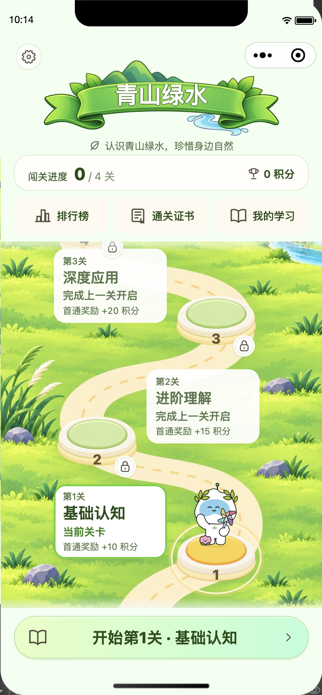
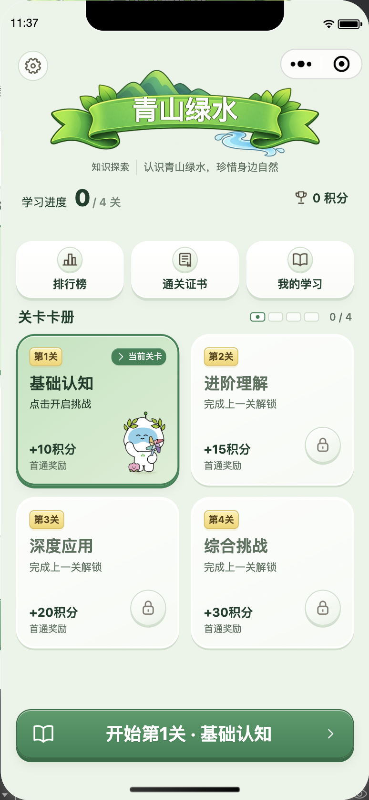
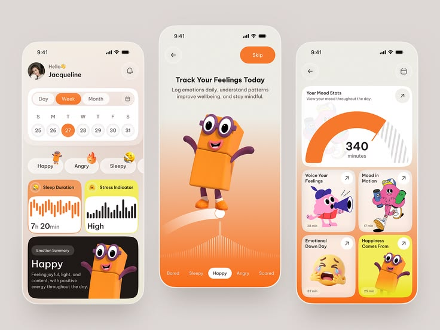
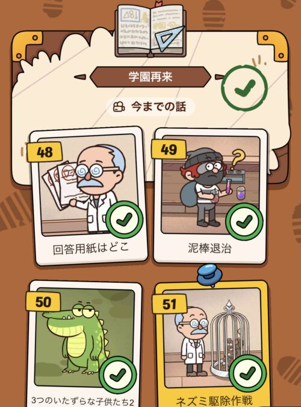

A
插画漫游
让探索路线成为首页的视觉主角


横幅下方集中呈现闯关进度和常用入口，地图完整铺开。当前关卡以金色台座、光环和智小谷突出，探索路径清晰。
A 保留插画探索路线；B 依照 Figma 原参考改为色块与章节卡片，保留原智小谷及已确认标题。四主题独立进入，红、棕、金、绿持续对应。先审整体风格，选定后继续细化。
让探索路线成为首页的视觉主角

横幅下方集中呈现闯关进度和常用入口，地图完整铺开。当前关卡以金色台座、光环和智小谷突出，探索路径清晰。
等大关卡卡册，轻量游戏交互

沿用已确认的色块风格，四关按顺序组成等大卡片；参考故事卡册图 74 加入编号签、完成印章和解锁提示。按钮补充渐变、高光与短投影，按压有反馈。未解锁不出现人物。

沿用大色块、留白、圆角卡片与人物位置，替换为已确认的乡村文化内容、四色和原智小谷。此处展示原图便于核对，不是新生成的设计图。原参考提供色块形式，补充的故事卡册图 74 提供游戏元素。
打开 Figma 原图 · image 65 / 1:67 ↗
打开故事卡册图 74 ↗